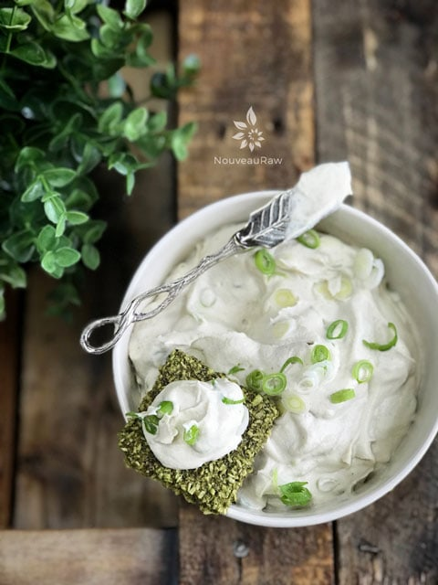

Cream Cheese Spread
 Cheese is wonderful comfort food, but for many of us, it contributes to digestive upset, inflammation, skin problems, and all-around phlegmy-ness. Because I don’t find these “attributes” something that I want to live with, I decided many years ago to create my own raw, vegan, cultured, nutrition-packed nut cheeses. To me, it tastes exactly the same as the cow-derived variety, with none of the cruelty or digestive sadness.
Cheese is wonderful comfort food, but for many of us, it contributes to digestive upset, inflammation, skin problems, and all-around phlegmy-ness. Because I don’t find these “attributes” something that I want to live with, I decided many years ago to create my own raw, vegan, cultured, nutrition-packed nut cheeses. To me, it tastes exactly the same as the cow-derived variety, with none of the cruelty or digestive sadness.
Tips & Techniques
Over the years, I have learned a few tips and tricks when it comes to culturing (fermenting) my nut cheeses. These are simple tips, and some may seem obvious… but let’s never assume anything. I find that it’s best to share such things, just in case.
Creating That Cheesy Tang
- If you find yourself with a nut cheese that just didn’t take on that cultured cheesy tang flavor, the ambient temperature in your kitchen may be too cool. Cold inhibits incubation.
- Try moving the mixture to a warmer location–just don’t forget where you put it! We keep our house on the cooler side, so there are times when I place the container in the dehydrator (Excalibur) and turn it on as low as it will go. You can also put it in the oven and leave the oven light on. That light alone will warm things up.
- If you use either of these methods, make sure that you taste test along the way. Often you will witness tiny bubbles forming in the center of the cheese mixture, making it fluffy and airy. That’s the right time to see if it’s sharp enough in flavor. And there lies the beauty of making your own cheeses–you have total control over the end flavor. If you don’t see any bubbles forming, don’t worry… they’re not always visible. Once you stir the cheese, the bubbles will dissipate, and the cheese will be creamy smooth.
Creating a Creamy Texture
- Nobody wants to experience a crunchy cream cheese or even one that feels grainy. There are many components to great food, and texture is one of them. If you are experiencing this, it’s due to the cashews not being blended well enough. Soaking the cashews to soften them is vital, especially if you don’t own a high-powered blender. Blend until the mixture eventually starts to release its natural oils and gets that smooth, creamy texture. It’s basically the same process as making nut butter.
Ingredient Run-Down
Nutritional Yeast
- Along with the culturing step, I added nutritional yeast to the recipe, which has a cheesy flavor. It is commonly used in vegan recipes.
- Nutritional yeast naturally supplies fiber and protein (a complete, bioavailable, and vegan source) with 18 amino acids and a multitude of different minerals (including iron, molybdenum, selenium, and zinc).
- Not all nutritional yeast brands are equal in quality, so always double-check your resources. I provided a link below to the one I use.
Probiotic Powder
- Broken down, the word probiotic means “for life” or “promoting life.” Probiotics hold the key not just to better health and a stronger immune system, but also to healing digestive issues.
- When culturing ANY food, it is vital to use sterile utensils and bowls, to prevent bad bacteria from forming. If you see any mold, whether fuzzy, black, or pinkish… toss it. This usually indicates that something you used was contaminated.
- Probiotic powders contain Lactobacillus and Bifidobacterium strains like, L. acidophilus and B. lactis as well as many others. The primary strain most suited for nut and seed cheese making is the lacto-bacteria (Lactobacillus acidophilus) strain. They usually come in capsule form, which can be opened up into the cheese blend.
- I find that all good quality probiotics work; some are just more powerful than others and can lead to a stronger fermentation.
Well, it’s time to get on with making this simple and delicious cream cheese. I hope I shared just enough information to whet your appetite. Keep me posted if you give this recipe a try. I love feedback. Blessings, amie sue
Yields 2 cups (498 g)
Cheese base:
- 2 cups (286 g) cashews, soaked 2+ hours
- 1 cup (216 g) water
- 1 tsp (2 g) probiotic powder
After fermentation:
- 1 Tbsp (8 g) onion powder
- 1⁄2 tsp (4 g) Himalayan pink salt
- 2 tsp (3 g) nutritional yeast
- 1 Tbsp (18 g) lemon juice
- 6 Tbsp (37 g) minced green onions
- 1/4 tsp (1 g) garlic powder
- 2 drops liquid NuNaturals stevia
Preparation:
Cheese base and fermentation:
- After soaking the cashews, drain and discard the soak water.
- Soaking will help soften the cashews for blending, as well as reducing phytic acid.
- Combine the cashews, water, and probiotic powder in a high-speed blender until smooth and creamy.
- If you detect any grittiness, keep blending.
- Place a strainer lined with cheesecloth inside a bowl, allowing the edges to drape over the edge.
- Place a nut bag in the center of the cheesecloth and pour the cheese into the bag. Close and pile the rest of the bag on top, then wrap the cheesecloth around everything.
- If you don’t have a nut bag, you can pour the cheese mix straight into the cheesecloth, just be sure to double or triple the layers. The nut bag is my personal preference but is not required.
- Gather the edges of the cloth and tie together.
- Place a weight on top of the cheesecloth ball.
- It should not be so heavy that it pushes the cheese through the cloth, but just heavy enough to gently press the liquid out.
- I use a mason jar filled with water or rocks for the weight. Cover everything with a towel.

Leave to ferment for 24-48 hours at room temperature.
- Use the timing as a basic range. The culturing process can go slower or quicker than expected, depending on the ambient room temperature.
- Taste test the cheese throughout the fermenting process to find the “sweet spot” of flavor that you prefer. Be sure to use a clean spoon each time, so you don’t contaminate the cheese.
- You will see a photo below of the “whey” that is collected at the bottom of the bowl due to the weight pushing it out over time. You can keep this “whey” and use it to start your next batch, or compost it.
After fermentation:
- Once fermentation is complete, remove the cheese from the cloth and place in a medium-sized bowl.
- Stir in the onion powder, salt, nutritional yeast, lemon juice, minced green onions, garlic powder, and stevia. Stir well.
- The reason I added the stevia was to create just a HINT of sweetness that is often detected in cream cheese. You can omit this, but I do recommend it for flavor balance.
- Store in the fridge in an airtight container for 5-7 days.
- If you want to use a mold, place the cheese into a mold, and cover it with plastic.
- Chill overnight. I used a food ring.
- I didn’t need to oil the ring.
- After it has chilled, just lift the ring off and serve.
© AmieSue.com